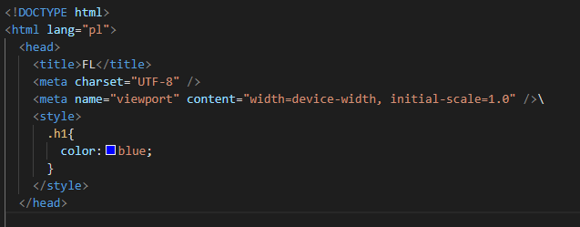
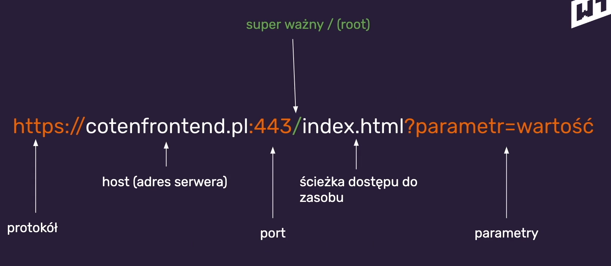

Warstwa 0 - Treść
Najważniejsza z warstw - bez niej nie byłoby strony.
Podstawy HTML i CSS. Wprowadzenie do programowania i narzędzia deeveloperskie.
Najważniejsza z warstw - bez niej nie byłoby strony.
Ta warstwa opakowuje treść w znaczniki które coś oznaczają np. nagłówki.
Warstwa nadająca wygląd warstwie Semantyki i Treści.
Odpowiada na interakcję na stronie internetowje, umożliwia manipulowanie poniższymi warstwami.
Na parterze mieszka treść, I piętro HTML, II piętro CSS, III piętro JS.
Każde piętro może wpływać na te poniżej. Jednak to Treść jest podstawą i jest najważniejsza.
Wszytkie operacje najlepiej wykonać na jak najniższym piętrze,
czyli gdy możesz zrobić coś w css to nie rób tego w js.

HTML - HyperText Markup Language. Język znaczników opakowujący treść strony.
Treść to wszystko co przenosi informacje np:
Najlepiej (bo w kolorze) przedstawione jest to na poniższym screenie
Oznacza to że ma to jakieś znaczenie, dlatego często tagi HTML nazywane są znacznikami.
Wciśnięcie
Należy pamiętać o zmianie języka na pl - dzięki temu strona,
będzie odczytywała się jako audio w języku polskim.
Ma budowe przypominającą ludzkie ciało, jak na rysunku poniżej.
CSS - Cascading Style Sheets, czyli kaskadowe arkusze stylów. Odpowiadają one za prezentację naszej strony.
CSS wpływają nie tylko na wygląd elemenmtów HTML na ekranie,
ale także na ich wygląd na wydrukach, czy czytnikach ekranowych.
Pozwala on na dopasowanie wyglądu tych elementów na różnych urządzeniach.
Składnia css to tzw. reguły, których budowę można zobaczyć poniżej.
Znacznik <style> w sekcji <head> (wpływa na strone ale nie jest widoczne w przeglądarce),
tak jak na rysunku poniżej.

Atrybut <style> w znaczniku <head> (wpływa tylko na znacznik w którym jest umieszczony),
tak jak na rysunku poniżej.
Dołączenie pliku ze stylami css do strony,
poprzez dodanie w znaczniku <head> linku z odniesiem do pliku,
tak jak jest to przedstawione na ryskunku poniżej.
Poniżej przedstawiony jest screen z przykładową treścią takiego pliku.
Czym jest internet i przeglądarka. Dalsze zagadnienia z HTML i CSS oraz pierwsze kroki w JS.
Pozwala na złamanie tekstu, czyli przeniesienie go do następnej linii.
Pogrubia tekst, ale nie posiada żadnego znaczenia semantycznego.
Pogrubia tekst, a dodatkowo podkreśla wysoką istotność i znaczenie frazy.
Pochyla tekst, ale nie posiada żadnego znaczenia semantycznego.
Pochyla tekst, ale też dodatkowo wskazuje iż treść może mieć inne znaczenie
np. ironia
Znacznik linku/łącza wewnątrz dokumentu.
Jego budowa jako linku przedstawiona jest na screenie poniżej
W atrybucie href podajemy adres do którego chcemy sie odwołać np.
Natomiast jego budowa jako znacznik łącza wewnętrznego dokumentu
wygląda tak samo z tą różnicą że w atrybucie href podajemy #idElementu np. tak jak na obrazku poniżej
Znacznik ten służy do navigacji.
W tym znaczniku zamykamy nasze łącza lub linki odnoszące się do miejsc po których chcemy nawigować.
Przykład poniżej.
Znacznik ten służy do dodawania do strony obrazków
Przyjmuje on dwa atrybury "src" (source),
czyli źródło pliku oraz "alt" (alternative), który zawiera tekstowy opis obrazka.
Treść taka wyrzucamy poza <main>. Np. navigacje czy stopkę.
Wtedy tym wypadku czytniki ekranowe i algorytmy google nie analizują takie treści.
Są 3 główne konwencje, każda z nich jest poprawna,
ważna jest konsekwencja w stosowaniu wybranej konwencji. A są to:
W CSS są 3 tzw. prwdziwe selektory, a są to :
Selektor element wykorzystuje standardowe znaczniki HTML.
Np. aby ostylować wszystkie elementy nagłówki o znaczniku h1,
ustawiając kolor tekstu na niebieski, należałoby do arkusza stylów dodać
następujący zapis.
Selektor klasa wykorzystuje przypisane do elementów klasy
Np. aby ostylować elementy posiadajce znacznik z przypisaną klasą "name",
należałoby wykonać w akruszu stylów zapis jak na obrazku poniżej. (klasa to kropka .)
Selektor id wykorzystuje przypisane do elementu id. Przy czym warto zaznaczyć że o ile jedna klasa może być
przypisana do wielu elementów,
to id jest wartością unikalną i nie może się powtarzać w obrębie strony
Np. aby ostylować element posiadajce znacznik z przypisanym id "name",
należałoby wykonać w akruszu stylów zapis jak na obrazku poniżej. (id to hash #)
Najlepiej to zagadnienie wytłumaczyć na przykładzie.
Załóżmy że chcemy aby wszystkie linki w <nav> były innego koloru niż pozostałe linki.
Wtedy w arkuszu stylów należałoby użyć następującegfo łączenia selektorów:
To jest dramat i nie powinno się tego używać.
Powoduje ignorowanie właściwości oznaczonej important
w późniejszych odniesieniach przy stylowaniu danego elementu.
Np. w poniższym przykładzie wszystkie linki będą miały kolor pomarańczowy,
pomimo tego że po selektorze a występuje selektor łączony mający wyższy priorytet.
To jest trochę jak tabela medalowa - największy mnożnik mają złote medale,
później srebrne, a później brązowe.
W stylowaniu css odpowiednikiem medali są kolejno od złotego do brązowego:
id (#name), klasa (.name) oraz element (h1). Poniżej Na rysunku widoczne jest jeszcze !important
oraz stylowanie liniowe (atrybut "style" w znaczniku) - lecz są top elementy które są bardzo rzadko
używane.
Wtedy pierszeństwo ma selektor który jest bliżej elementu (wizualnie to niżej w arkuszu stylów)
To tak jakbyśmy wpisali treść arkusza w head, dlatego można powiedzieć że jest bliżej.
Dobrą praktyką jest nadawać klasy każdemu elementowi i unikać zagnieżdżeń, tyle.
HTTP - HyperText Transfer Protocol, to protokół z któego w 99% korzysta przeglądarka aby pobrać i następnie
wyświetlć zawartości stron internetowych.
HTTPS - HyperText Transfer Protocol Secure, to samo co HTTP tyle, że dodatkowo jest on szyfrowany
(bezpieczny).
URL - Uniform Resource Locator, czyli tak naprawdę adres gdzie znajduje się zawarość strony.
Jego budowe przedstawia screen poniżej.

W tym wypadku flow najlepiej podsumowuje obrazek poniżęj.
W tym wypadku flow najlepiej podsumowuje obrazek poniżęj.
Uruchomić narzędzie developerskie w przeglądarce, a nastpnie zakładke network.
Po odściwżeniu strony widać wszystkie pobierane elementy strony.
Najpierw pobiera się html, pozniej fonty z google, css strony, zdjęcia itd.
Root wskazuje miejsce w którym przeglądarka powinna szukać zasobu.
Tak więc w przykłądzie na u dołu gdy podamy w źródle obrazka root "/"
zastosowana zostanie ścieżka bezwzględna do zasobów i przeglądarka będzie szukała pod prawidłowym
adresem,
natomiast gdy go dnie dodamy, czyli podamy ścieżkę względną,
to przeglądarka zwyczajnie doklei źródło do obecnego URL i tam będzie szukała zasobu.
Wartości w JS są tym czym są liczby w matematyce - zbiór istniejących już elementów, które
wykorzystujemy.
Są one też nie zmienne bo 2 to 2 a nie 6, 2!=6.
Na samym dole body (tuż przez zamknięciem znacznika body)
w znaczniku <script>, jak na obrazku poniżej
Lub (bardziej poprawna forma) poprzez zaimplementowanie pliku
z kodem na naszą stronę (podobnie jak w css),
również tuż przez zamknięciem znacznika body.
Polecenie console.log() pozwala nam wyświetlić w konsoli devtools,
podany w parametrze tekst np.
Console log czesto używany jest do sprawdzania działania kodu,
poprzez zwracanie odpowiednich elementów podczas działania strony.
To pewnego rodzaju połączenie między nazwą której chcemy użyć, a wartością.
W tym wypadku zmienna 'name' wskazuje an wartość 'Adam', a 'age' wskazuje na wartość 27
Rozpoczyna i kończy literał - który jest tekstem zawierającym zmienne.
Do zmiennych zostaną podstawione wartości do których łączeniem są zmienne.

Czym jest DOM? Co to takiego BoxModel? Jakie są podstawowe typy w JS? Jest GIT?
Git śledzi zmiany w plikach tekstowych, natomiast wszelkie zmiany obrazkach uznaje jako nowy obraz i nadpisuje stary.
Przy plikach office sytuacja jest analogiczna co do obrazów.
Mamy w takim wypadku 3 opcje przedstawione poniżej.
Znacznik ten nie ma znaczenia semantyczngeo, a używany jest gdy chcemy opakować coś do czego nie istnieje odpowiedni semantyczny znacznik.
Element z własnością display: block, zajmuje całą szerokość okna przeglądarki. Powoduje to elementy z tą własnością ukłądają się jeden pod drugim.
Elementy z własnością display: inline, są to tak zwane elementy liniowe. Elementy te usawiają sie obok siebie
Są jeszcze elementy z własnością display: inline-block. Zachowuje się jak element z własnością inline,
jednak można mu nadawać własności odpowiedniue dla własności blokowych.
Własności width i height nadają na sztywno (element zawsze będzie miał taki rozmiar)
elementom blokowym szertokość i wysokość. Przykład widać na obrazku powyżej.
Własności max/min-width i max/min-height nadają elementom maksymalne wartości własności width i height,
przez co np. przy max-width: 600px, element będzie miał maksymalnie szerokość 600px ale może też mieć mniej. Przykład poniżej.
Pozwala na "odcięcie" treści wystającej poza element w którym jest umieszczona poprzez ustawienie wartości na hidden.
Działa zarówno w pionie jak i w poziomie.
Wartość overfow: visible jest domyślną wartością tej własności.
Jest jeszcze wartość overflow: auto która, jeśli element wewnętrzny wystaje poza element zewnętrzny,
dodaje scroll w elemencie zewnętrznym tak aby element wewnętrzny wyświetlał się w całości i z niego nie wystałwał.
Padding - czyli margines wewnętrzny elementu, odpowiada za to o ile oddalone będą elementy znajdujące się w elemencie którego dotyczy padding.